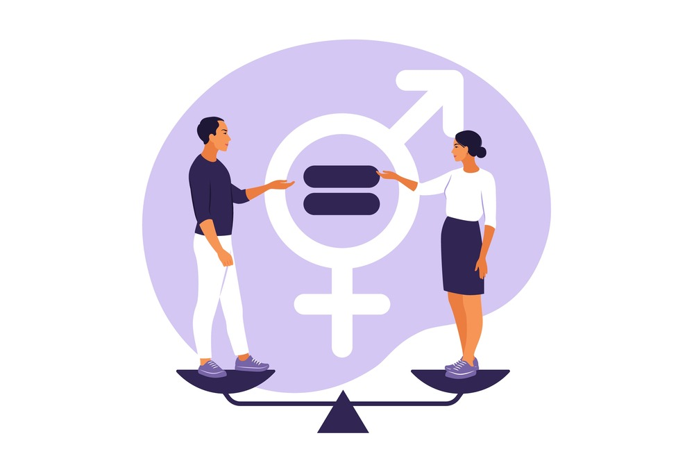

.png)
Tugas ini dibuat oleh Lucia Nera Candra Puntadewa kelas 92 nomor absen 23 dengan tujuan yaitu memenuhi penugasan IL Kecil "Membuat Web Tema Kerjasama International dengan HTML dan CSS". Dengan pemenuhan tugas ini, diharapkan website ini dapat digunakan sebagai sumber informasi yang akurat dan sesuai dengan fakta dan siswi mendapatkan nilai yang sesuai.
SDGs (Sustainable Development Goals) atau TPB (Tujuan Pembangunan Berkelanjutan) adalah kumpulan tujuan yang ditetapkan oleh Perserikatan Bangsa-Bangsa (PBB) untuk mencapai kehidupan yang lebih baik dan lebih berkelanjutan bagi semua orang di dunia ini. SDGs terdiri atas 17 komponen, yaitu: tanpa kemiskinan (no poverty), tanpa kelaparan (zero hunger), kehidupan sehat dan sejahtera (good health and well-being), pendidikan berkualitas (quality education), kesetaraan gender (gender equality), air bersih dan sanitasi layak (clean water and sanitation), energi bersih dan terjangkau (affordable and clean energy), pekerjaan layak dan pertumbuhan ekonomi (decent work and economic growth), industri, inovasi dan infrastruktur (industry, innovation, and infrastructure), berkurangnya kesenjangan (reduced inequality), kota dan permukiman yang berkelanjutan (sustainable cities and communities), konsumsi dan produksi yang bertanggung jawab (responsible consumption and production), penanganan perubahan iklim (climate action), ekosistem lautan (life below water), ekosistem daratan (life on land), perdamaian, keadilan dan kelembagaan yang tangguh (peace, justice, and strong institutions), dan kemitraan untuk mencapai tujuan (partnerships for the goals). Indonesia, bersama dengan negara-negara lain, bekerjasama dan bersinergi dalam upaya mewujudkan SDGs, baik melalui kerjasama bilateral, regional, maupun multilateral. Dalam tugas ini, saya akan membahas berbagai kerjasama yang dilakukan Indonesia bersama dengan negara lain untuk mewujudkan SDGs.
Apa itu Gender?Menurut website UNFPA (United Nations Population Fund), gender adalah atribut dan peluang ekonomi, sosial, dan budaya yang terkait dengan menjadi laki-laki atau perempuan. Dalam rangkap sosial, menjadi seorang laki-laki maupun perempuan bukan hanya kondisi biologis atau fisik saja, tetapi menyangkut pula harapan, ekspektasi, dan standar yang berbeda-beda. Dari perbedaan-perbedaan ini, sering muncul kondisi dimana yang satu lebih ditinggikan daripada yang lain. Kesetaraan gender adalah kondisi dimana ada keadilan dan kesetaraan diantara semua gender dan tidak ada persepsi dimana satu gender lebih baik daripada yang lain, dan seterusnya. |
Apakah Kesetaraan Gender Penting?Kesetaraan gender penting dan relevan, tidak hanya bagi warga Indonesia, tetapi bagi semua warga dunia pula. Ketidaksetaraan gender mewujudkan situasi ekonomi, sosial budaya, dan politik yang tidak aman dan tidak damai. Tanpa adanya kesetaraan gender, seorang laki-laki atau perempuan dapat dihadapi dengan tantangan-tantangan yang tidak adil hanya karena gender yang mereka miliki, suatu hal yang tidak dapat dikendalikan oleh seseorang. Oleh karena itu, sangat dibutuhkan kesetaraan gender dalam dunia ini. |
Kesetaraan Gender Bagi PerempuanSayangnya, kesetaraan gender masih belum terwujud dalam banyak negara di dunia ini. Per September 2024, jumlah perempuan yang mengalami ketidakpastian dalam hal makanan dibandingkan jumlah laki-laki lebih 48 juta orang dan 119.3 juta gadis-gadis masih tidak bisa sekolah. Secara global, 1 dari setiap 8 perempuan dan gadis berusia 15-49 tahun menjadi sasaran kekerasan seksual dan/atau fisik oleh pasangan intimnya pada tahun 2023 (12,5%), rasio ini mencapai hampir 1 dari setiap 3 perempuan dan anak perempuan atau lebih buruk lagi di 13 negara, termasuk Republik Demokratis Kongo, Afghanistan, Papua Nugini, dan Kiribati. Di Indonesia saja, IKG atau Indeks Ketidaksetaraan Gender pada tahun 2023 menunjukkan angka 0,447, menurun 0,012 poin dari tahun 2022. Namun, semua data ini membuktikan bahwa kesetaraan gender bukan hanya sesuatu yang dirasakan secara pribadi saja, tetapi berdampak pada seluruh dunia. |
Kesetaraan Gender Bagi Laki-LakiKetidaksetaraan gender tidak hanya merugikan pihak perempuan saja, tetapi pihak laki-laki juga. Mengutip dari sebuah artikel oleh vic.gov.au berjudul “Gender inequality affects everyone”, “For men and boys, pressure to conform to some stereotypes of masculinity can impact physical and emotional health. Such stereotypes include having to be tough, stoic, dominant and aggressive. At work, gender stereotypes mean that men may feel less able to call-out outdated ideas or access flexible working policies and parental leave. In Australia, men are twice as likely as women to have flexible work requests denied. Rigid stereotypes of masculinity play a direct role in men’s violence against women and gender diverse people. We need to address harmful forms of masculinity to prevent gendered violence, as well as engage men and boys in gender equality. “ Artinya, ketidaksetaraan gender merugikan pihak laki-laki dan mendorong para lelaki untuk memaksakan diri pada stereotip yang tidak sehat dan merugikan kesehatan mental dan fisik mereka. Stereotip seperti setiap laki-laki dominan dan agresif mendorong para lelaki untuk lebih ingin dan lebih banyak melakukan kekerasan fisik kepada para wanita. Toxic masculinity yang bersikeras bahwa laki-laki tidak boleh menunjukkan perasaan berlebih dan lain-lain tidak mendukung perkembangan dan pertumbuhan laki-laki, melainkan menguranginya dan menggantikannya dengan pola pikir yang tidak sehat, baik bagi diri mereka sendiri maupun orang disekitarnya. Pada tahun 2021 sendiri, rasio antara tingkat bunuh diri laki-laki dan perempuan di Indonesia berjumlah 1.8. Tingkat bunuh diri atau suicide rates terbukti dipengaruhi oleh tingkat kesetaraan gender, dimana negara dengan tingkat kesetaraan gender yang lebih tinggi akan memiliki perbandingan atau rasio antara tingkat bunuh diri antar gender yang lebih kecil. Oleh karena itu, kesetaraan gender harus diwujudkan dalam dunia ini, secara global, maupun regional. |
|

|
Gender equity seringkali digunakan secara sinonim dengan gender equality, tetapi keduanya memiliki arti yang berbeda. Gender equality memiliki arti kesamarataan antara gender-gender, sedangkan gender equity menyadari bahwa perempuan dan laki-laki memiliki kedudukan yang sama, tetapi bukanlah pribadi yang sama. Kebutuhan seorang perempuan akan berbeda dibandingkan kebutuhan seorang laki-laki. Maka dari itu, dibutuhkan keadilan diantara dua gender, bukan pembagian yang sama rata. Inilah yang perlu diusahakan dan dijunjung tinggi dalam masyarakat kini. Bukanlah laki-laki dan perempuan diberikan hak yang sama, melainkan hak yang adil dan memenuhi kebutuhan masing-masing gender tanpa pengecualian.